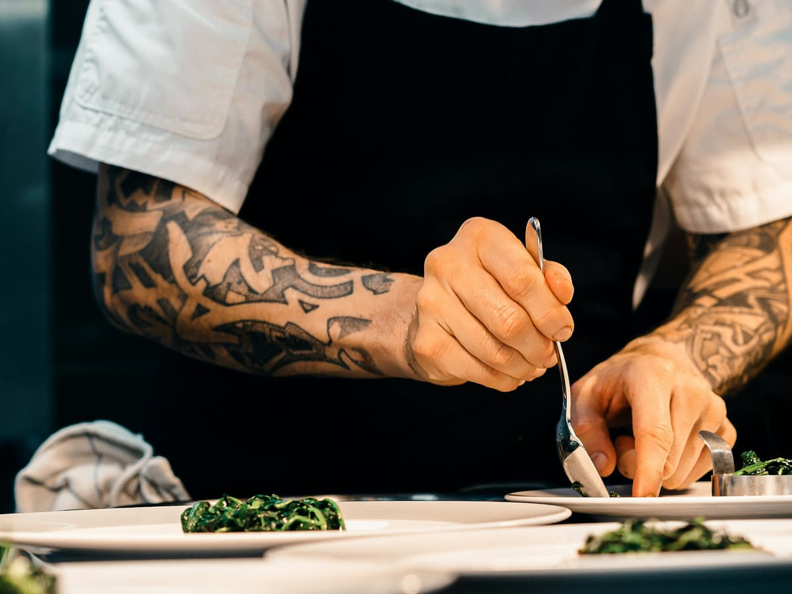
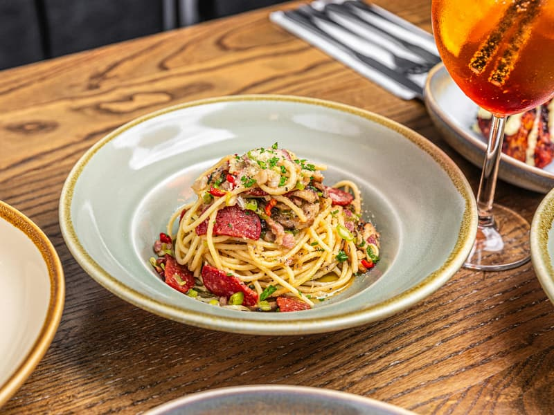
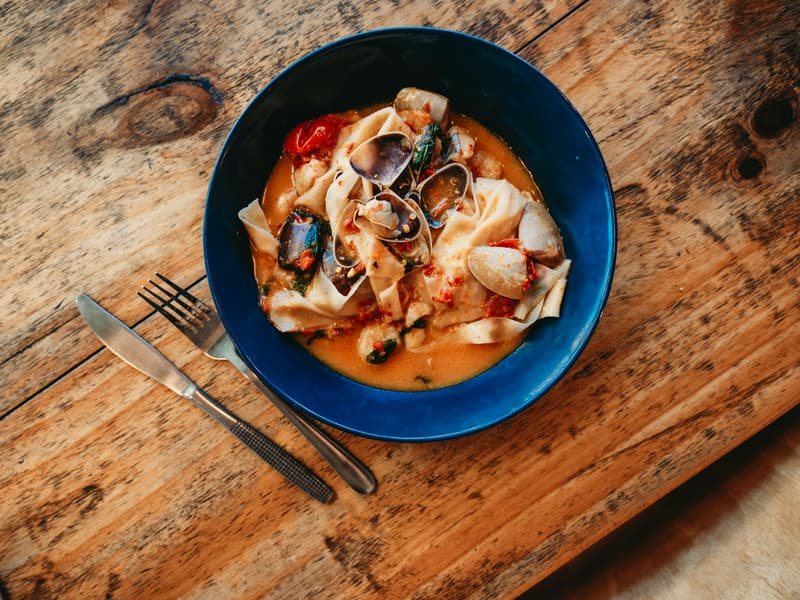
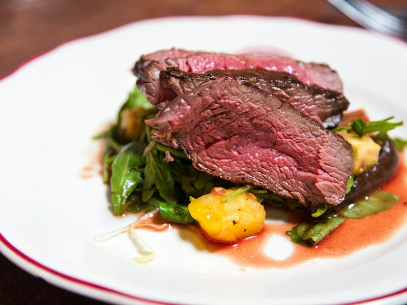
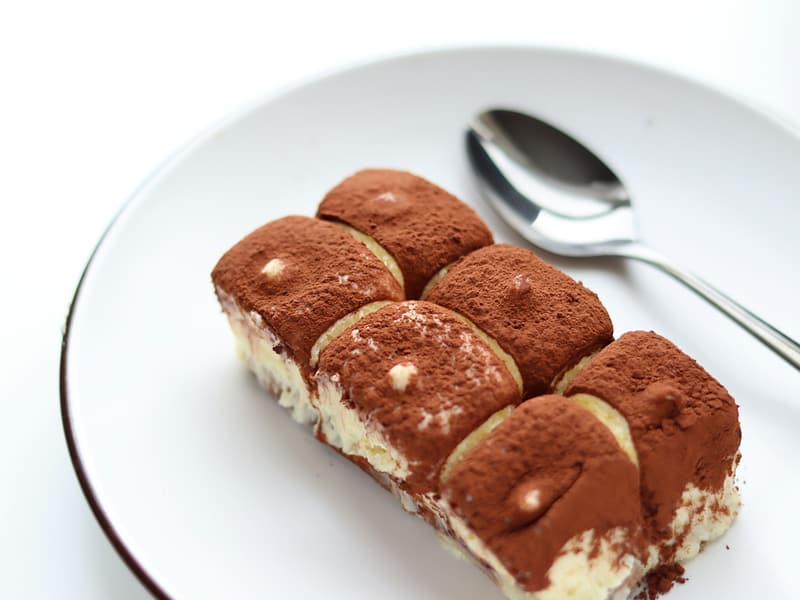
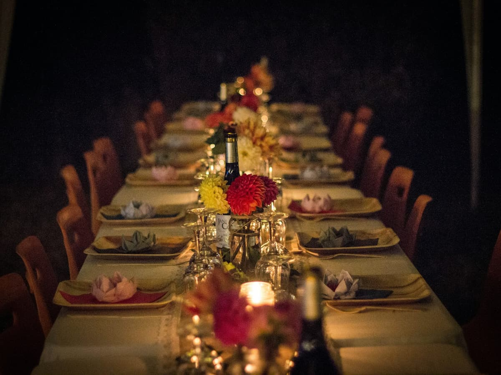

Trattoria Oliwka
Italian cooking with a seasonal soul, in a townhouse on the Kielce market square.
The reservation goes straight to the restaurant phone. You get confirmation immediately.

About
Our story
Oliwka started with one idea: cook the way people cook at home in Italy — with whatever happens to be good, and without pretending it is more than an honest plate of food.
We make the pasta here every morning. The vegetables come from the market on Ściegiennego, and we change the menu four times a year, because that is how often what is worth serving changes.
Marek Bielak
Head chef and owner
Services
Our menu
The menu changes with the season — this is what we are serving now. Ask the staff about allergens, we have the full ingredient list for every dish.
Burrata with tomatoes
42 złBurrata, heirloom tomatoes, basil, extra virgin olive oil
Beef carpaccio
46 złBeef tenderloin, rocket, parmesan, lemon, olive oil
Grilled octopus Chef’s choice
58 złOctopus, crushed potatoes, taggiasca olives, parsley
Tomato bruschetta
28 złGrilled sourdough, cherry tomatoes, garlic, basil
Tagliatelle al ragù Chef’s choice
52 złPasta made on site, beef and pork ragù braised for four hours
Cacio e pepe
44 złPecorino romano, black pepper, egg pasta
Linguine with seafood
64 złPrawns, mussels, tomato, white wine, garlic
Gnocchi with gorgonzola
46 złPotato gnocchi, gorgonzola dolce, walnut
Ribeye steak Chef’s choice
89 złAged ribeye, rosemary, roast potatoes, herb butter
Duck breast
72 złDuck, celeriac purée, red wine sauce
Oven-baked cod
68 złCod, fennel, olives, confit tomatoes
Aubergine alla parmigiana
48 złAubergine, tomato, mozzarella, basil — vegetarian
Please tell our staff about any allergies. The menu changes seasonally and with what is available.




Illustrative photography under a free licence (Unsplash). Full list of authors: CREDITS.md.

Private events
Private events
From small birthdays to company dinners — we build the menu around the group and reserve the room exclusively. The room seats up to 40.
Ask about a dateReviews
What our guests say
Real flavours and a warm room. One of the best meals we have had in Kielce.
Fresh ingredients, beautiful plating and kind service. We will be back.
A hidden gem. The octopus was superb and the wine list is genuinely thought through.
Booking through the form above is fastest. The phone is answered during opening hours.
Opening hours
22:00
22:00
22:00
22:00
23:00
23:00
21:00
The kitchen closes 30 minutes before the restaurant. On Fridays and Saturdays we recommend booking.